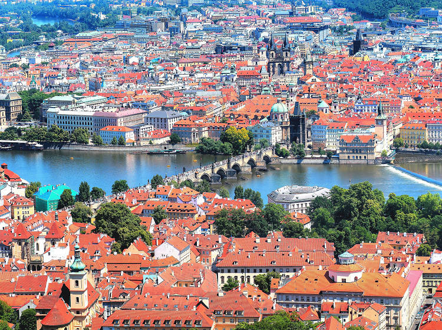

Born: 31.03.2004, Kyiv
Education:
Graduated from lyceum "Prestige" in 2021,
3rd year Student in KPI
I visited Prague in 2018 and fell head over heels in love with this enchanting city. Its picturesque streets, lined with charming pastel-colored buildings and cobblestone pathways, transported me back in time. The historic Prague Castle perched high above the city, and the iconic Charles Bridge adorned with statues provided a sense of grandeur that was simply breathtaking. I lost myself in the narrow alleyways of the Old Town, where every corner seemed to reveal a new story or hidden gem. The vibrant street art and lively atmosphere of Wenceslas Square contrasted beautifully with the serene calm of the Vltava River. And let's not forget the delicious Czech cuisine and the warmth of the locals who made me feel right at home. Prague is a city that captured my heart, and I can't wait to return and explore more of its magic.
